时间：2023/9/14/10:42
本文档旨在记录安装完成manjaro系统后，对系统开发和使用环境的配置，不介绍安装部分。manjaro的安装很人性化，不需要对分区作任何特殊操作，只需要按照使用场景选择对应的模式即可。
系统环境：
|
|
另一台机器：
|
|
安装软件screenfetch，neofetch即可命令行展示出上述信息。
配置镜像源
|
|
命令执行后会弹出一个 UI 框来让你选择，默认速度最快的排在第一个（这里选择清华大学tsinghua的源）,然后点击“OK”，再次单击“确定”即可选择好最快的源。
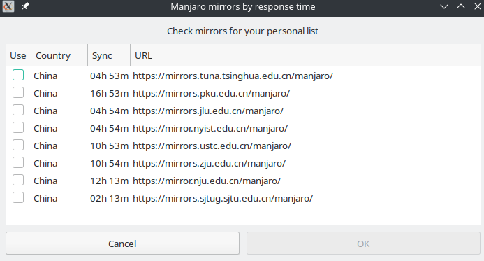
打开终端输入以下命令，查看是否将源更改成功
|
|
这句命令使用KDE自带的文本编辑器kate来编辑/etc/pacman.d/mirrorlist这个文件。这个文件中保存的就是pacman会使用的软件源地址。打开后会看到如下内容：
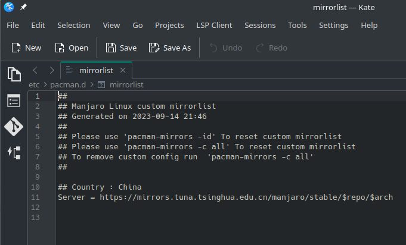
然后更新一下软件仓库：
|
|
加入archlinuxcn源
在命令行中使用kate打开/etc/pacman.conf。也就是执行命令
|
|
打开文件后拖到最下方，并且加入如下内容：
|
|
然后更新
|
|
安装 yay
Manjaro 上默认使用的包管理工具是 pacman，但是这个工具不支持 AUR 软件仓库。AUR 全称是 ArchLinux User Repository，他是由社区驱动的软件仓库， 属于不受支持的软件仓库（unsupported）.但却是 Arch 社区最有活力的仓库，基本上你想要的软件可能官方源里面没有，但是这里面肯定有。yay 是对 pacman 的一个封装，使用上和 pacman 没有什么差别，但是它支持 AUR。注：yaurt已经过时，不建议安装。
|
|
查看一下软件源:
|
|
这里查询得到的数据应当是aur官方软件源，以前的教程都会让添加一些国内的aur源，但是现在已经不行了。
国内已经不支持AUR的镜像源了：清华关于移除 AUR 镜像的通知
因此更换镜像源后，也不能正常工作，会报错，下列方法也会报错，因此建议不更改官方软件源。aur官方源目前可以访问，但速度很慢，yay上的一些软件是通过aur官方源进行安装的，需要访问外网，因此需要先安装V2ray服务。
Manjaro如果yay使用了aur的清华源,出现报错，解决方法
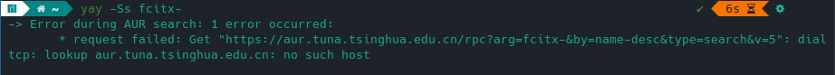
1 2 3 4-> Error during AUR search: 1 error occurred: * request failed: Get "https://aur.tuna.tsinghua.edu.cn/rpc?arg=fcitx-&by=name-desc&type=search&v=5": dial tcp: lookup aur.tuna.tsinghua.edu.cn: no such host 或者 response decoding failed: invalid character '<' looking for beginning of value;
安装完成后再次更新
|
|
安装输入法
因为搜狗拼音现在还依赖着Fcitx-qt4，而这个包现在已经被官方源废除。而搜狗很久都没有迁移到qt5，所以现在Fcitx-sogoupinyin这个包也从官方仓库移除了。目前没法通过官方安装搜狗拼音。
2023.9.16在搜索pinyin安装包时（谷歌搜拼音并不好用），突然发现基于fcitx5的安装包fcitx5-pinyin-sougou，但该包不能正确安装。因此，替换原来的谷歌拼音。过程如下
搜狗拼音
参考链接：Manjaro安装Fcitx5中文输入法
由于之前已经安装了fcitx4，而fcitx5与其冲突，因此需要先卸载：sudo pacman -Rs $(pacman -Qsq fcitx)
安装fcitx5
|
|
由于这里复制出错，导致没有正确退出pacman程序，其进程锁没有正常释放，因此，需要手动删除锁，参考链接： Manjaro使用pacman提示无法锁定数据库。（注：该链接的environment配置有误）
其实报错信息也给出提示
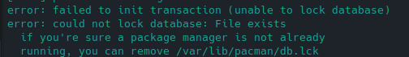
删掉之前的文件： /var/lib/pacman/db.lck。sudo rm /var/lib/pacman/db.lck。就正常了。关于主题部分就不进行配置了，默认的即可。
还有一点，和谷歌拼音对输入法的配置一样，也需要加入环境变量。
配置environment
|
|
将下面的内容添加到其中，原因为environment在所有用户登陆时都有效。
|
|
如果不进行环境的配置，那么重启之后不能正常切换输入法，也就不能输入中文。
配置输入法
中文输入法插件的名称为Pinyin,这是在开发者的仓库中发现的，否则不清楚名称，无法确定哪一个是我们安装的，就不能添加到配置中使用。原仓库链接
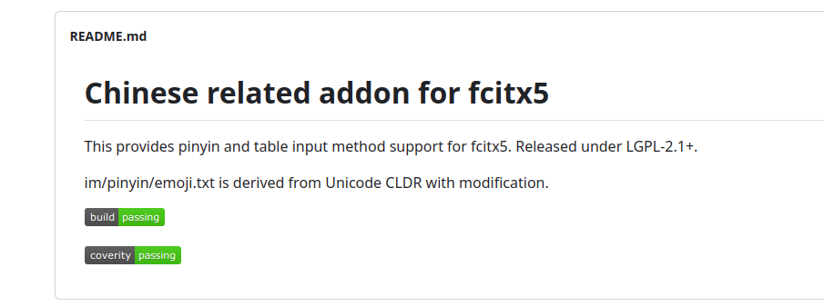
添加Pinyin
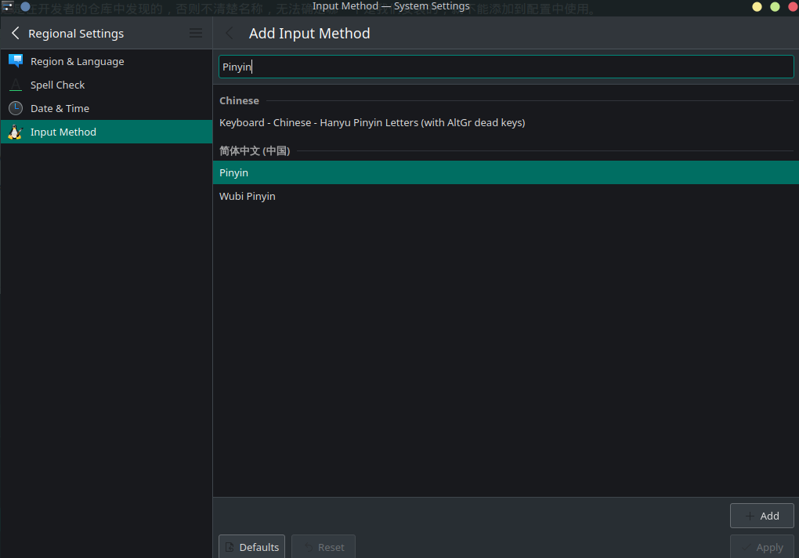
添加成功后可以看到
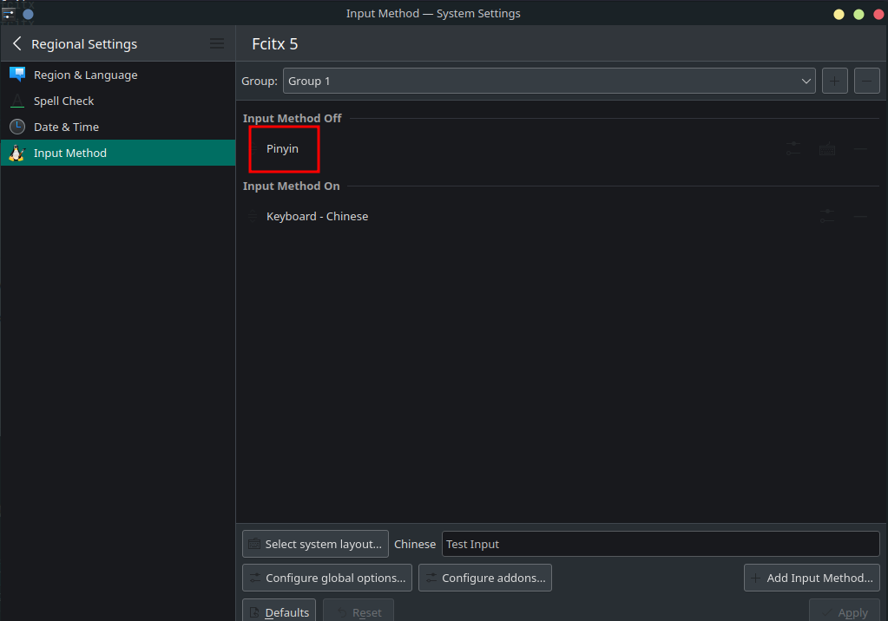
如果正确配置了仍然不能切换出想要的输入法，可以查看Group是否正常切换。默认的应该有两个Group，所有很可能是Group不正确。
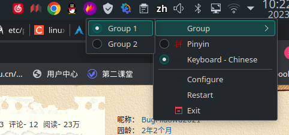
谷歌拼音
所以直接安装谷歌拼音。manjaro Linux，有什么较为简单的方法，可安装中文输入法? - 知乎用户0C8Unl的回答 - 知乎
|
|
KDE 或者其他桌面配置:
输入kate ~/.xprofile或nano ~/.xprofile 并且加入如下内容（也可以按照上一节的environment添加）:
|
|
配置好了之后要注销或者重启一下才可以生效;
第一个输入法需设置为键盘格式。
重启后，在下面的状态栏中找到键盘图标
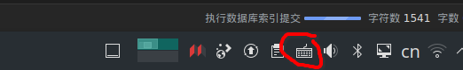
然后进入配置（Configure），点击加号，通过搜索，找到谷歌拼音，并添加到输入法中。然后就可以通过ctrl+shfit切换输入法了。
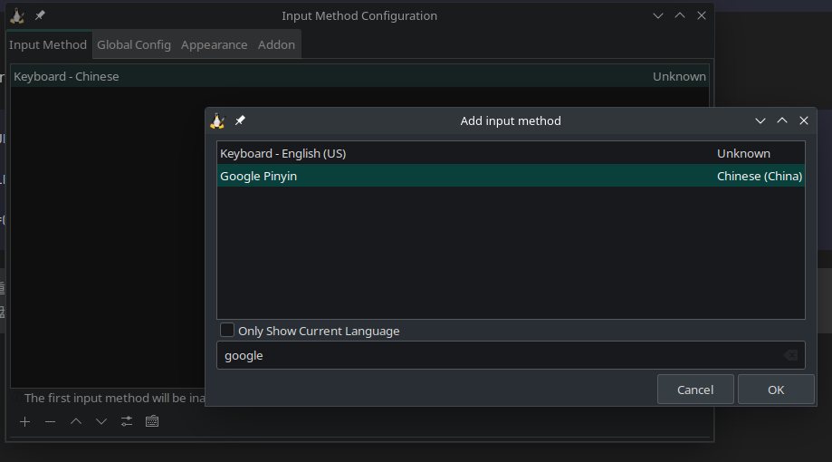
需要注意：在输入密码时，如果仍然处于中文输入法的话，会按照中文字符进行输入。
安装输入法后，使用shfit无法切换输入法，需要在fcitx中的全局设置中，增加切换激活/非激活输入法快捷键
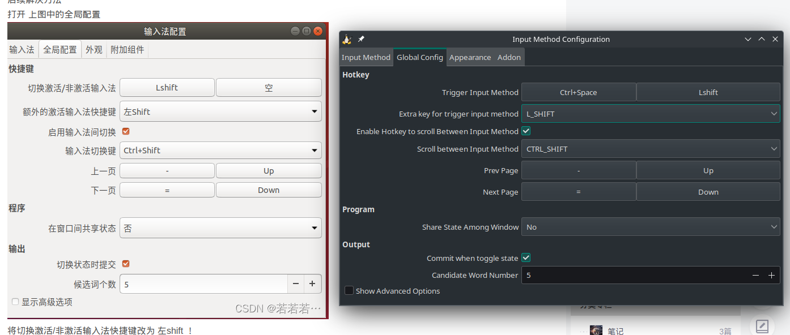
参考链接：安装google输入法后，左shift键不能切换中英文
安装软件
timeshift
强大好用的备份、回滚系统工具。装好Manjaro必须要做timeshift，以防你哪天玩坏只能重装
|
|
关于这个软件的使用，详见另一篇：
建议：不要在不同的电脑上通过timeshift进行备份迁移，我已经尝试过，能够进入系统，但是应该是由于驱动不适配，最后无法进入系统，只能在登陆界面反复登陆。
思源笔记
本地储存优先的笔记软件，支持markdown,也支持云同步，但主要内容都是先存放在本地，不需要放在任何云端。
|
|
目前qq已经原生支持linux
|
|
qq运行一段时间后闪退，甚至刚刚登陆上就闪退。在AUR论坛中找到问题及解决方案：aur.archlinux.org
在关机时若未主动退出qq，重启后会导致闪退。手动移除
~/.config/QQ/crash_files 文件夹可以解决问题。
另在v2ex论坛中，也找到了解决方案，并且可以解决重复删除文件夹的问题，在删除crash_files中的内容后，将该文件夹设置为只读。
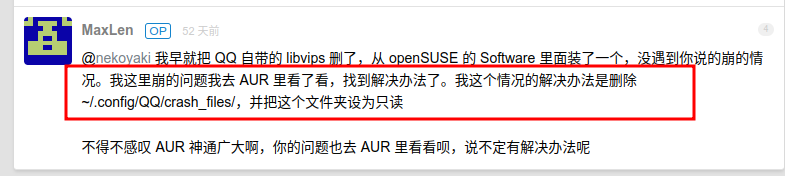
qq音乐
|
|
Chrome谷歌浏览器
|
|
Watt Toolkit：Steam++
不使用代理就可以访问github或者steam。与科学上网不同，仅仅能够访问一些常见的但没有被ban的网站。安装此软件主要是为了在安装科学上网环境之前能够正常访问github，便于我们下载源码进行安装。
Watt Toolkit是一个本地通过反向代理实现的访问github等常见的网站的工具，其优势就是访问网站的速度和不使用代理一样。而科学上网的网速需要看代理服务器的速度。
|
|
安装后启动，勾选github进行加速
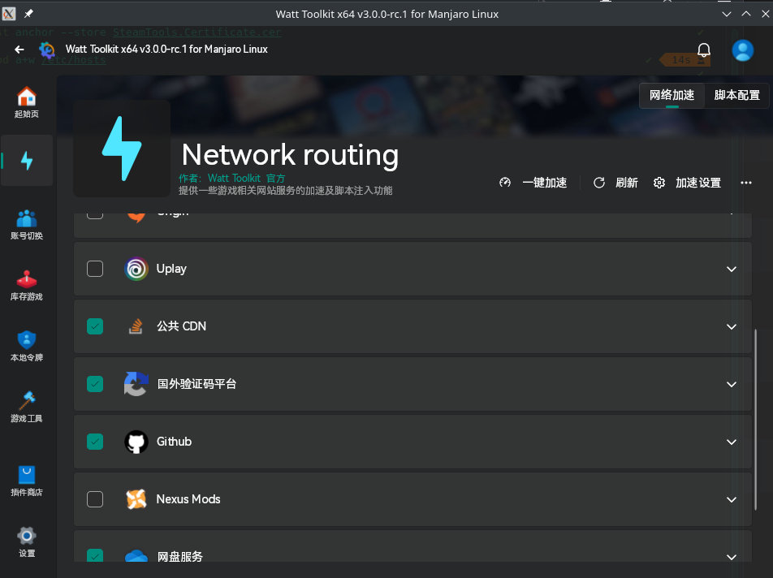
启动时会转到浏览器，要求先做一些操作：
-
利用火狐浏览器导入证书
证书文件在
/home/ling/.local/share/Steam++/Plugins/Accelerator/SteamTools.Certificate.cer，其中ling为用户根目录。然后输入命令
sudo trust anchor --store SteamTools.Certificate.cer，没有尝试过不输入，输入后启动正常工作。
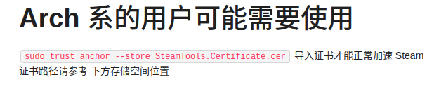
-
需要输入命令
sudo chmod a+w /etc/hosts，避免每次输入密码
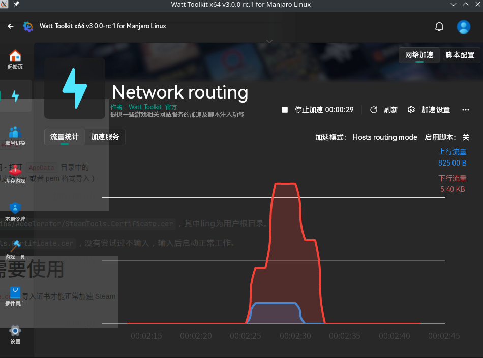
-
如果只安装火狐浏览器，可能导入了证书也用不了（当前版本），因此需要安装Chrome，参见上一节Chrome浏览器安装。
-
如果还不行，则在开始加速以前，点击右边的刷新按钮，显示加速成功即可。
vscode
|
|
clion
|
|
有问题，提示没有java环境
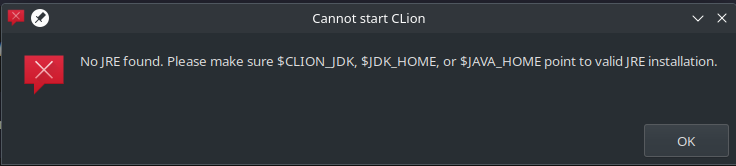
根据官方论坛的回答，需要安装两个依赖，Can’t open CLion
|
|
flameshot-截屏软件
|
|
需要在设置中找到快捷键设置，将flameshot添加到快捷键中，然后设置对应的快捷键。
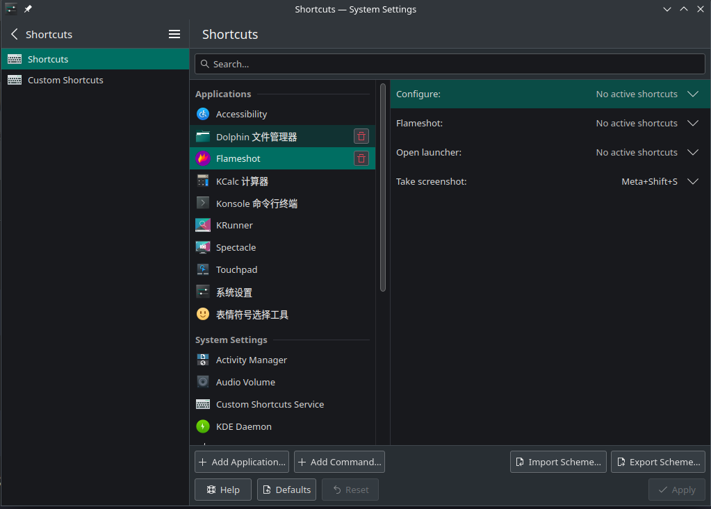
需要注意点是，linux下的截屏并不能对右键菜单进行截屏，即使通过快捷键。因此需要利用延时截屏的功能。flameshot的延时截屏需要通过Open launcher然后进行截屏。
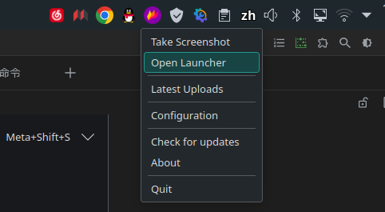
点击后就会出现窗口，选择延时的时间。
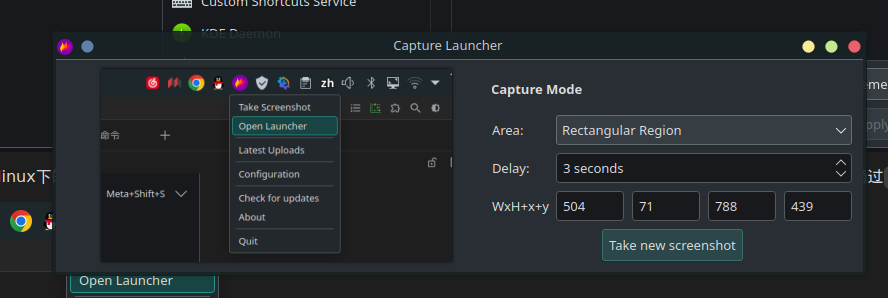
然后就可以实现截屏右键。参考：Ubuntu 中如何对右键菜单进行截图
cmake
|
|
clash for windows
|
|
free节点仓库
|
|
参考链接：blog.linioi.com/posts/cl…
manjaro下的系统代理和其他发行版不同，设置系统代理后，仍然有部分程序不会通过系统代理上网。比如火狐浏览器，chrome浏览器。
因此对于在浏览器中的科学上网，需要分别在两个浏览器中设置代理服务器的地址。
FireFox
在设置中，General -> Network Settings中，进行设置，一般设置为Manual，也就是手动设置代理。
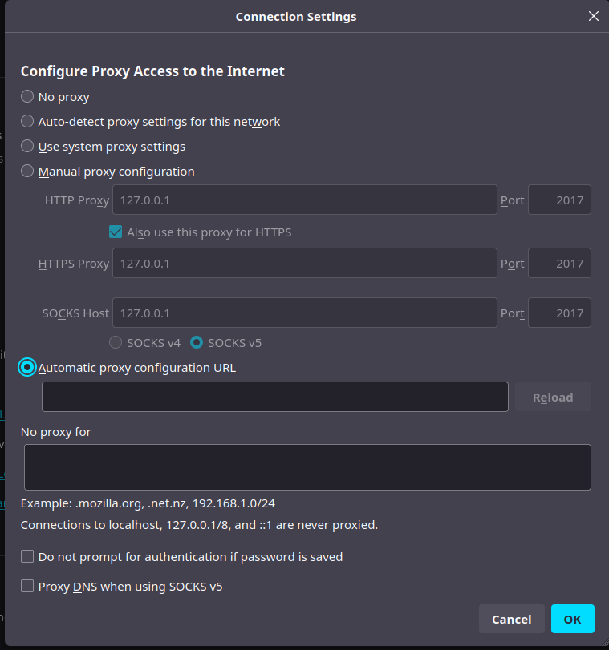
Chrome
Chrome没有代理网络设置，需要在启动文件中增加启动参数
参考链接：在Linux上为Google Chrome配置代理设置
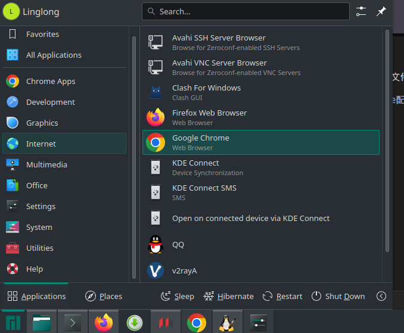
右键Chrome图标，选择Edit Application...编辑启动参数，增加--proxy-server=127.0.0.1:7890，这是clash的代理地址，可以根据自己的代理软件进行设置。
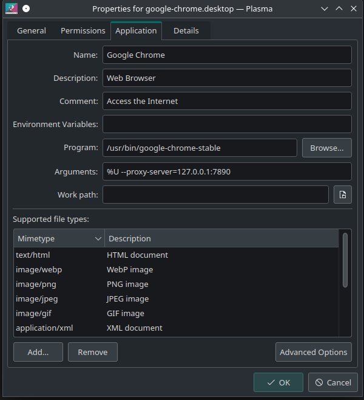
application的源文件地址有两个，一个是菜单栏的地址/home/ling/.local/share/applications/google-chrome.desktop，一个是程序安装后的地址/usr/share/applications/google-chrome.desktop。
为了使用方便，建立两个Chrome的desktop文件，都放在usr下的文件目录里，在应用程序的启动菜单里就会自动分类。需要使用哪一个就启动哪一个。但需要注意，chrome关闭后是最小化在状态栏，需要手动关闭后再打开新的chrome，否则不会刷新程序。
make
|
|
todesk远程软件
|
|
注意，不要安装todesk，而是安装todesk-bin，前者不是最新版本。
安装完成后，会提示开启守护进程，否则将不能正常使用该软件。守护进程类似于windows中的服务。
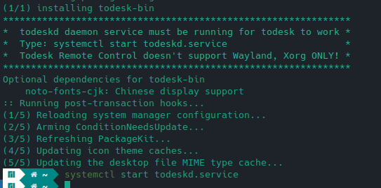
|
|
windows字体安装
参考链接：manjaro踩坑记(2022更新版)
AUR提供了ttf-ms-win10的安装包，不过不提供字体文件，需要自己从已有的win10系统（拷贝所有C:\Windows\Fonts下的字体文件）或从win10镜像中抽取字体文件。
安装字体有缺陷
图标符号显示为方块，这是由于konsole的默认配置文件中并没有对字体做限制，因此，显示的字体会随着系统全局使用的字体而改变。只要在字体设置中，改变对应位置的字体为支持manjaro的图标的字体即可。
在Manjaro官方论坛得知，使用的字体为MesloLGS。可以通过命令行安装（一般已经安装了，只是没有启用，如果你在系统的字体管理中没有发现该字体，则需要手动安装）
|
|
然后在系统设置->外观->字体->固定宽度，将其字体更改为MesloLGS即可。然后重启konsole,就可以看到图标显示正常了。
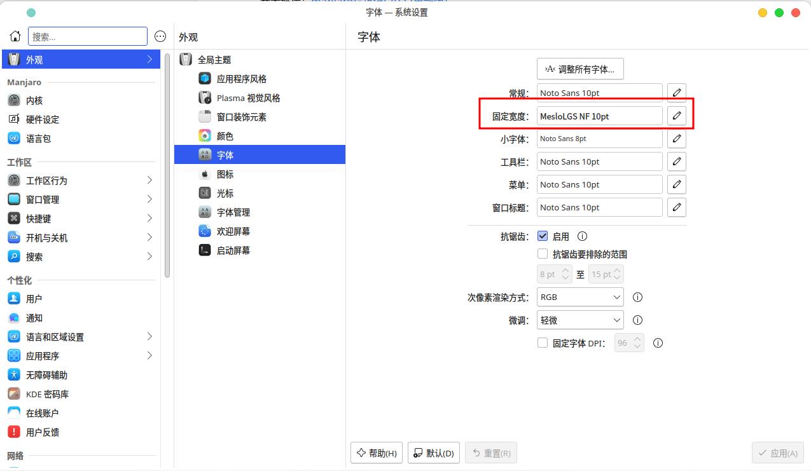
直接拷贝
由于本作者使用的是双系统下的manjaro，因此我可以直接从windows的c盘直接拷贝字体文件。
首先从AUR克隆tff-ms-win10仓库：
|
|
修改ttf-ms-win10仓库中的PKGBUILD如下段落，添加的字体文件表示仿宋、黑体和楷体：
|
|
然后将windows的 C:\Windows\Fonts下面的所有文件拷贝到桌面的build文件夹中。再拷贝license文件（C:\Windows\System32\Licenses\neutral\_Default\Professional\license.rtf）到桌面的build文件夹中。
最后在ttf-ms-win10目录下执行安装命令，注意如果报错，大概率是当前抽取的字体文件中没有该字体，可以按照错误提示从网上下载ttf文件加入其中，或者在PKGBUILD里删掉该字体，毕竟只有中文字体比较重要：
|
|
从win10镜像中抽取字体文件
注：以下方法作者并没有尝试过
挂载win10安装镜像，manjaro下只需要右键选择挂载ISO，Dolphin的左边即可出现ISO的访问文件路径，找出source文件夹下的install.esd或install.wim文件，把该文件拷贝到ttf-ms-win10仓库文件夹下，执行如下命令解锁所有字体文件：
|
|
其余步骤与直接拷贝相同。
网易云音乐-微信安装总结
在本文中，将提到许多中安装微信的方法，包含windows原生版本的微信、经过deepin打包的wine版本的微信、对spark商店中微信打包版本的微信等。网易云音乐现在只推荐使用基于deepin-wine/wine-for-wechat联合版本的windows直装版。具体的原因在后面两者的详细安装步骤中会解释。如果只希望安装这两个软件，则可以跳过后面的详细安装介绍章节，直接运行下列命令：
|
|
这里安装了两个版本的微信，但其数据互通，微信的数据文件都在～/Documents/WeChat Files中。为了微信功能的完整性，请先打开deepin微信，然后关闭。再打开spark版本的微信，此时spark版本的微信所有功能都可以使用。注：如果出现中文字体变成方块字等显示问题，建议参考本文中的windows字体安装部分。
deepin版本的启动入口在：
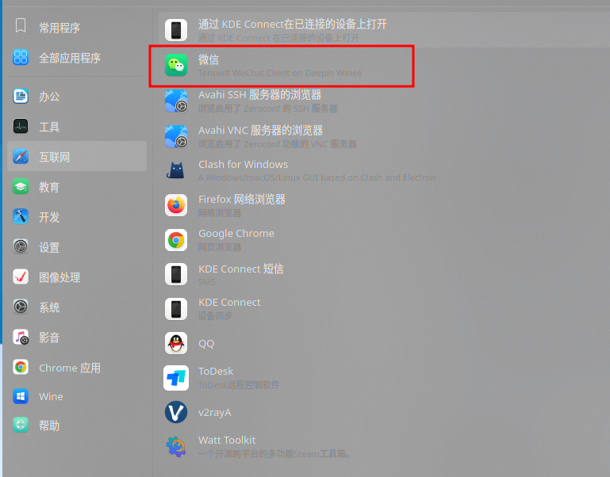
第一次启动需要安装，安装后点立即打开会崩溃，但再次启动微信就正常了。
spark版本的启动入口在：
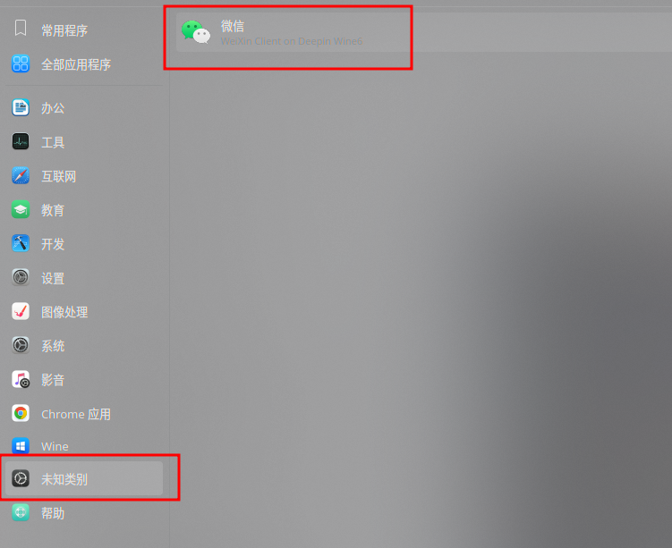
同样第一次启动需要安装
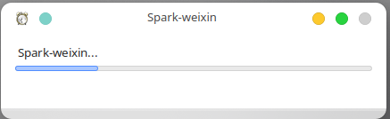
在deepin版本的微信安装后，再安装spark版本的微信，则订阅号相关的功能就会变正常。如果只安装deepin版本，或者只安装spark版本的微信，打开这些界面会黑屏或者不显示。
网易云音乐直接打开安装即可，所有功能全部正常。
微信
deepin版本的微信
直接安装deepin-wine-wechat失败，提示有三个包不能直接安装，其中一个是deepin-wine6-stable，错误原因是系统找不到autoreconf，这个软件直接搜索是没有的，因为是在debian系linux才有，但是仍然通过yay搜索得到dh-autoreconf，其说明表示这是deb的helper，能帮助添加autoreconf。因此安装这个包。
|
|
安装后，再安装微信
|
|
但这个版本的wechat不能登录，扫码登录后，会要求输入安全码，但是linux上并没有输入窗口，因此废弃这个版本。但这个版本的wine对于后续的网易云安装是必须的！因此一定要先安装deepin版本的微信！但这个版本的wine对于后续的网易云安装是必须的！因此一定要先安装deepin版本的微信！但这个版本的wine对于后续的网易云安装是必须的！因此一定要先安装deepin版本的微信！
uos版本的微信
uos的桌面版本只有最基本的聊天功能。yay -S wechat-uos。不推荐安装。
直接安装微信
需要使用wine模拟windows的应用层，然后就像在windows中安装软件一样。
|
|
其中wine-for-wechat是对微信和网易云专门做了修改的wine版本，wine-wechat-setup是对wine-for-wechat的安装和启动写了一个封装。只要有wine-for-wechat就可以安装，wine-wechat-setup会让安装过程更方便。
安装成功后，需要去官网下载最新版本的微信，然后运行下列命令，在安装之前，需要先((20230916200607-hootjp8 “安装字体”))。
这里需要说明的，wine-wechat-setup会给微信单独文件夹安装，如果安装了wine-wechat-setup则使用下面的命令进行安装：
|
|
否则，使用下面的安装：
|
|
其中WeChatSetup.exe为下载下来的安装包。注意（微信版本3.9.7，wechat-setup版本1.4）64位的安装包会有聊天框白框的问题，因此选择安装32位的包（WeChatSetup_x86.exe）。注意：这里仅仅针对的是没有提前安装deepin版本的情况，如果提前安装了deepin版本的微信，则无论哪个包都会有白框！如果需要直装，则不能安装deepin版本，这样的后果是网易云音乐无法正确使用！
另外还有中文字符显示方框的问题，这个问题比较简单，但解决的方式有很多，大部分不一定有用。目前的解决方式参见本文中的windows字体安装部分。
在官方仓库的issues中：wechat相关问题。这里提到的大部分解决字体的方法不适用于目前的版本。请不要在这上面浪费时间，直接使用上面的windows字体安装。如果不按照上面的方法，则下面的步骤也可以正常解决问题，但数字、英文部分的排版会很奇怪。
安装字体
|
|
安装字体后再安装微信，就没有方框问题了，不需要修改注册表，以及复制字体到wine环境。
由于其有一些使用上的小问题，最终选择spark版本的微信。
spark版本的微信
安装spark商店版本的微信：yay -S com.qq.weixin.spark。spark版本的可用，且功能完善。
与直装的方式的微信比较以后，发现直装的字体虽然能显示，但是数字以及一些字体很怪。但是直装方式可以安装网易云音乐。spark版本的微信需要用到wine（deepin-wine-wechat提供了魔改的wine），只要有wine即可。为了后续的网易云音乐安装，需要先安装deepin-wine-wechat。因为deepin-wine-wechat包含了网易云音乐所需要的显示库gdiplus.dll。但只有deepin-wine-wechat还不够，因为只安装deepin-wine-wechat不会提供wine命令，就不能够通过wine安装网易云音乐的安装包了。所以还需要安装wine-for-wechat。网易云音乐的流程见网易云音乐章节。
|
|
spark版本的入口为：
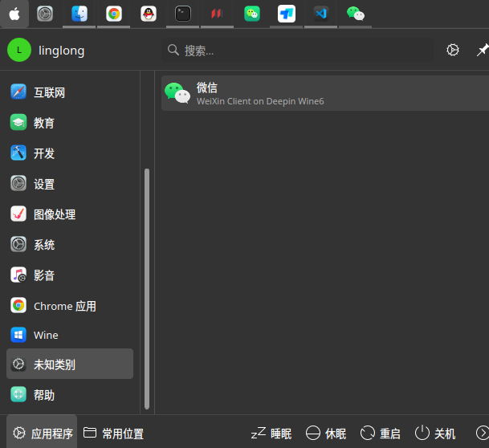
修改缩放的方式如下，参考链接：com.qq.weixin.spark
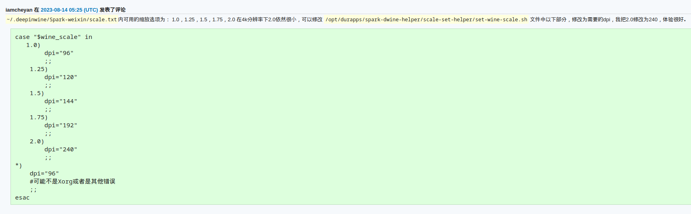
由于我目前使用的屏幕为1080p，不需要修改dpi。直接修改文件中的值为1就行。
总结
最终选择spark版本的微信，功能完善，不需要修复任何问题，开箱即用。但需要注意的是，要先通过直装方式安装，因为网易云音乐需要前面的环境。
网易云音乐
经过反复的尝试，原生的网易云音乐已经不能够正常登陆了，详情见：发现Ubuntu网易云音乐几乎不能用了。因此，之前通过官方的linux版本已经无法使用。而其他的第三方客户端，都是基于网页版的网易云音乐作适配，而网页版的功能很少，像心动模式就没有。在本文中安装微信的一节中提到，可以通过直装的方式进行安装，并且要先安装deepin-wine-wechat和wine-for-wechat。
先去官网下载安装包到本地。然后通过wine命令安装网易云，通过wechat命令安装也可以，但是没有快捷启动。因此直接通过wine安装。
|
|
原因及解释：deepin的wine有原装的gdiplus库，但安装deepin的wechat并不会给wine的调用接口，因此无法通过wine命令安装网易云音乐。当安装wine-for-wechat后，不会修改原来的wine文件夹，仅仅是提供wine命令。这一步其实没有安装新的wine。然后就可以直接安装网易云音乐的包，就可以正常运行网易云！
V2ray
也是一种科学上方式，由于clash在manjaro上的体验不好，不能停止代理，以及代理效果不好。故使用v2ray协议进行科学上网。
v2ray也有GUI配置，只需要安装两个软件即可
|
|
运行v2raya的服务，否则无法使用
|
|
参考链接：V2rayA在linux 下安装使用教程
开始设置
通过 2017 端口 如 http://localhost:2017访问 UI 界面。
（如果无法访问，请检查你的服务是否已经启动，相关问题）
官方教程：官方教程
创建账号
在第一次进入页面时，你需要创建一个管理员账号，请妥善保管你的用户名密码，如果遗忘，使用sudo v2raya --reset-password命令重置。
然后导入节点
free节点仓库
|
|
按照其中的方式连接，即可正常科学上网。比起clash好用的多。可以自动代理，自己选择代理方式等。不需要对浏览器单独配置。
对于v2raya的设置，可能需要按照下面进行设置
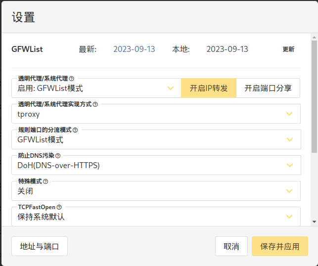
wps-office
|
|
WPS加粗字体显示错误，显示成一团黑
解决方案：Wps很多字体的加粗都显示异常的问题。如图：
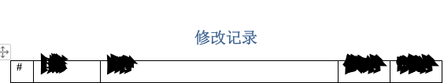
降级 freetype2 (2.13.2-1 → 2.13.0-1) 即可解决问题
如果是更新包后，出现问题，则系统应该会保留旧包的缓存，可以直接执行
|
|
如果提示包不存在，则说明缓存被清理，或者以前没有安装过旧版。
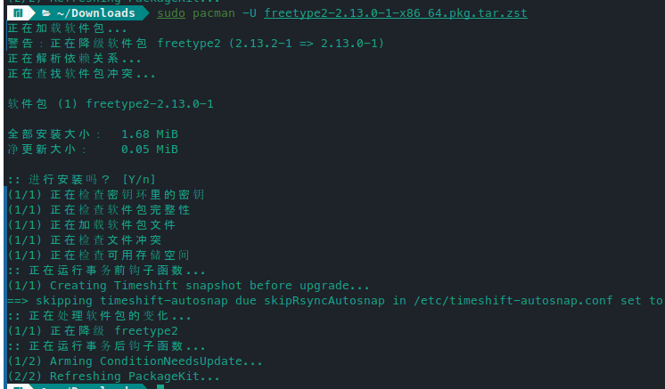
需要去官方备份下载旧版本，手动安装。官方备份网站：归档

obs-studio 录屏软件
|
|
目前最新版为obs-studio 29.1.3-1，这个版本改进了 VAAPI H264 支持，并使用Nvidia的驱动程序libva-vdpau-driver，但这个程序已经很久没有改进了，是这个驱动的问题导致obs启动崩溃。
解决方案：卸载libva-vdpau-driver，yay -R libva-vdpau-driver，如果实在需要硬件加速，则应安装现在官方活跃的驱动版本：sudo pacman -S nvidia-vaapi-driver ，这是一个仍在活跃的改进版：nvidia-vaapi-driver。
开机自启动
参考链接：Manjaro添加软件或者脚本自启动
将需要启动的软件的desktop文件或者脚本放在~/.config/autostart 文件夹下，开机会自动加载。
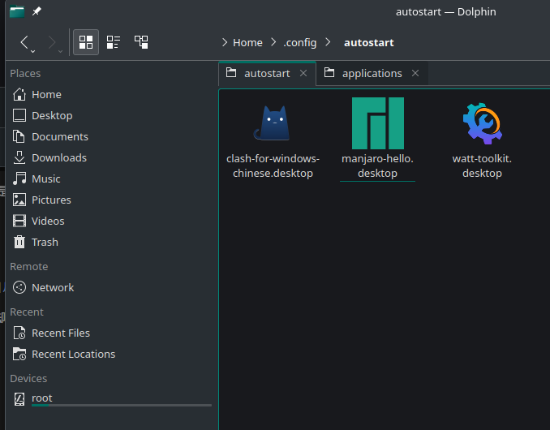
针对开机自启动，linux有一套自己的方法，而manjaro又有一套不同的流程。
上述方式是最简单的一种。参考链接：Manjaro开机自启动脚本实现，Linux开机流程整理
在linux内核加载完成后，会启动初始化程序，也就是第一个程序 /sbin/init，作用是初始化系统环境，它的进程编号（pid）就是1。其他所有进程都从它衍生，都是它的子进程。
许多程序需要开机启动。它们在Windows叫做”服务”（service），在 Linux 就叫做”守护进程”（daemon）。init 进程的一大任务，就是去运行这些开机启动的程序。但是，不同的场合需要启动不同的程序，比如用作服务器时，需要启动 Apache，用作桌面就不需要。Linux 允许为不同的场合，分配不同的开机启动程序，这就叫做”运行级别”（run level）。也就是说，启动时根据”运行级别”，确定要运行哪些程序。manjaro的默认的 init 程序是systemd-sysvcompat提供的/sbin/init(新安装的系统已经默认使用systemd) 或 sysvinit。
Linux预置七种运行级别（0-6）。基本上，依据有无网络与有无 X Window ，Linux 将 run level 划分为7个等级（0-6）。其中0是关机，1是单用户模式，6是重启。而 2-5，一般来说都是多用户模式。
每个运行级别在/etc目录下面，都有一个对应的子目录，指定要加载的程序。即rc0.d到rc6.d目录,其中存放的是该运行级别中需要执行的服务脚本的 软链接文件（即快捷方式） 。而真正的脚本文件,都存放在etc/init.d 中(结尾为d,即为direction,与init作为区分 )这样做的另一个好处，就是如果你要手动关闭或重启某个进程，直接到目录 /etc/init.d 中寻找启动脚本即可。然而在manjaro中并没有发现以上两个文件，arch系列是有着自己的另一套启动方式。
网络上的方法大部分是在启动初始化程序时做做手脚，而manjaro发行版早已经弃用了这种模式,转而采用了systemd，以下是用ArchWiki查找init时的原话:
Warning: Arch Linux only has official support for systemd. When using a different init system, please mention so in support requests.
所以在manjaro的/etc目录下并没有init文件夹和init.d文件夹。
systemd
systemd的文件主要存放在/usr/lib/systemd 目录中,有系统（system）和用户（user）之分。关于这部分内容，还有更多的细节，该文件并不是唯一的管理服务的文件。详见：
/usr/lib/systemd/system/ #开机不登陆就能运行
/usr/lib/systemd/user/ #登陆后运行
每一个服务以.service结尾，文件内一般会分为3部分：[Unit]、[Service]、[Install]
[Unit] 主要是对这个服务的说明，内容包括Description和After，Description用于描述服务，After用于描述服务类别
[Service] 是服务的关键，是服务的一些具体运行参数的设置
Type=forking是后台运行的形式，
PIDFile为存放PID的文件路径，
ExecStart为服务的具体运行命令，
ExecReload为重启命令，
ExecStop为停止命令，
PrivateTmp=True表示给服务分配独立的临时空间
注意：[Service]部分的启动、重启、停止命令全部要求使用绝对路径，使用相对路径则会报错！
[Install] 是服务安装的相关设置，可设置为多用户的
步骤
以远程软件todesk的守护进程为例
|
|
将服务自启动
|
|
重启后利用systemctl status查看todeskd.service的运行状态。
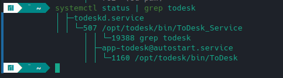
|
|
每一个 Unit 都有一个配置文件，告诉 Systemd 怎么启动这个 Unit 。Systemd 默认从目录/etc/systemd/system/读取配置文件。但是，里面存放的大部分文件都是符号链接，指向目录/usr/lib/systemd/system/，真正的配置文件存放在那个目录。systemctl enable命令用于在上面两个目录之间，建立符号链接关系。
可以将/etc/systemd/system/看作是自动目录，和~/.config/autostart目录作用的形式差不多，只要是这个文件夹中的脚本就会自动运行。因此需要将真实的脚本链接到这个文件夹中。
详细的关于systemd的介绍参考：Systemd 入门教程：命令篇
参考链接：Manjaro开机自启动脚本实现
修改KDE的Applications Menu
我使用的是KDE桌面系统的Manjaro，在安装软件时，会创建desktop文件，用于快速启动应用。这个文件会放在/home/ling/.local/share/applications下，更多的是放在/home/ling/.local/share/applications中，wine的程序比较特殊，被放在了文件夹wine中。但我们不需要掌握这一套规则，可以直接使用GUI程序对菜单进行修改。
右键菜单图标，选择编辑应用（Edit Applications…）
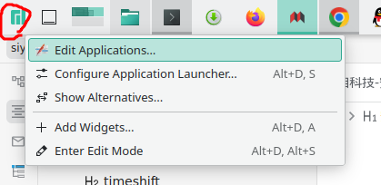
进入到编辑菜单栏后，就可以按照需求，拖动应用程序，或者新增对应的destop文件即可。
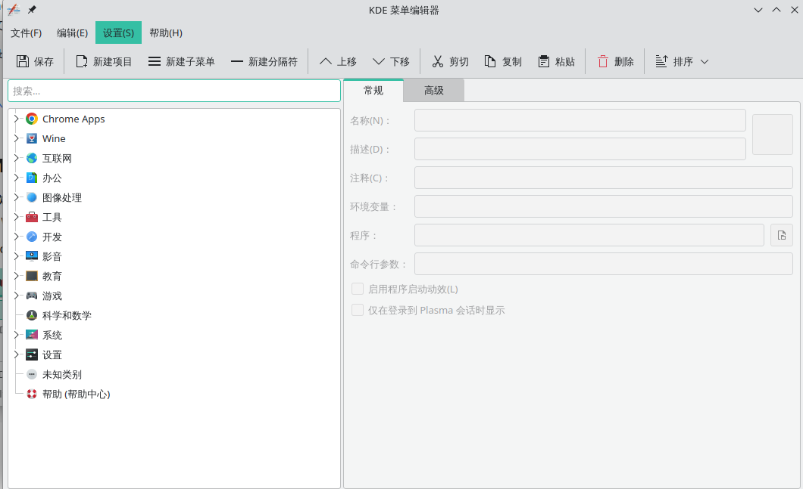
更换主题
在主题商店中安装全局主题
kde桌面有很强的定制性，可以在主题商店中安装各种各样的主题。但目前这个版本的kde（KDE 5.109.0 / Plasma 5.27.7），在安装全局主题时，会有如下报错：
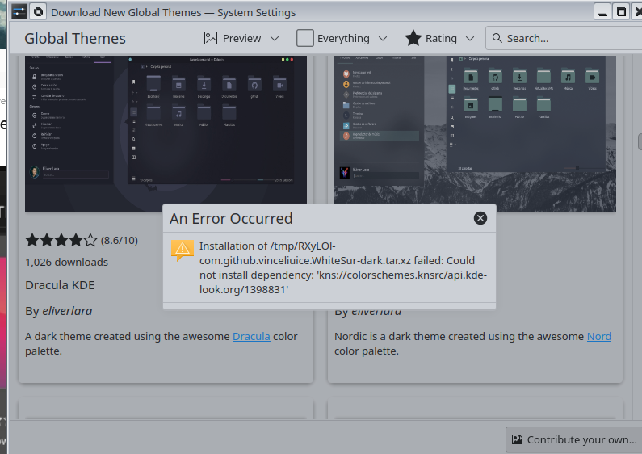
上述问题提示是由于依赖问题导致的安装失败，而网络上的大部分帖子都提到这这是kde的官方仓库问题。还有推荐ocs-url进行安装主题的，但是这种方式要求在网页下载，并且会等待10秒才能进行下载安装。而ocs-url已经过时，使用该方式安装得到的主题大多不包含主题布局，仅仅只有一些开机界面，图标之类的残缺品。下图就展示有主题布局的和通过ocs-url安装的没有桌面布局的主题。
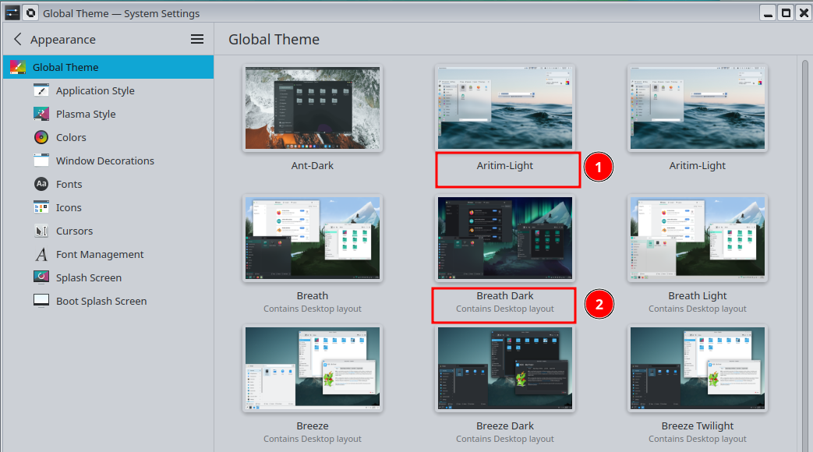
由于是依赖问题报错，怀疑是仓库被ban导致连接不上仓库，无法下载文件。因此使用科学上网，然后再安装，但仍然有相同问题。在写这篇记录的时候，想对该问题截图，但意外的安装成功了。因此怀疑是代理不稳定。而在Fedora论坛中，发现有如下回答，可以通过命令行方式安装主题压缩包，由于命令行可以直观的观察进度，以及出现问题的原因，因此进行尝试。
参考链接：Fedora Kinoite Global Theme Installation Problem
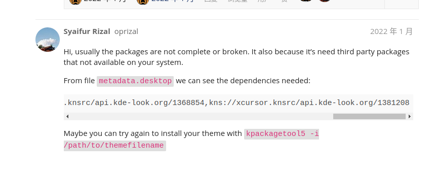
结果，通过多次安装，竟然安装成功。因此，可以肯定该问题是由于网络问题导致的，而通过gui形式安装需要的时间较长，也不能直观的看出问题，因此少次尝试将不会成功。
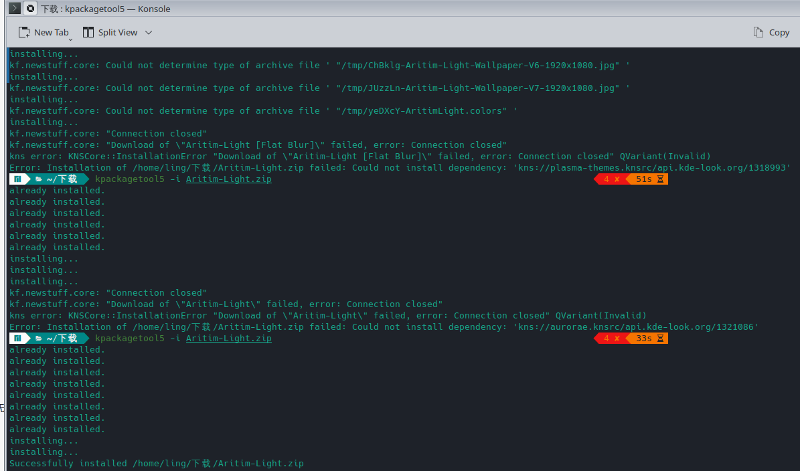
可以从上图，看出，前几次安装都会失败，但每一次安装，都会有更多的安装包被安装，仅剩下少量的包依赖没有被下载。直到所有的安装包都被成功安装。
安装命令行如下：kpackagetool5 -i /path/to/theme/file
示例：kpackagetool5 -i com.github.vinceliuice.WhiteSur-dark.tar.xz
保证成功的安装某一主题的流程
- 先在主题商店中查找自己喜欢的主题
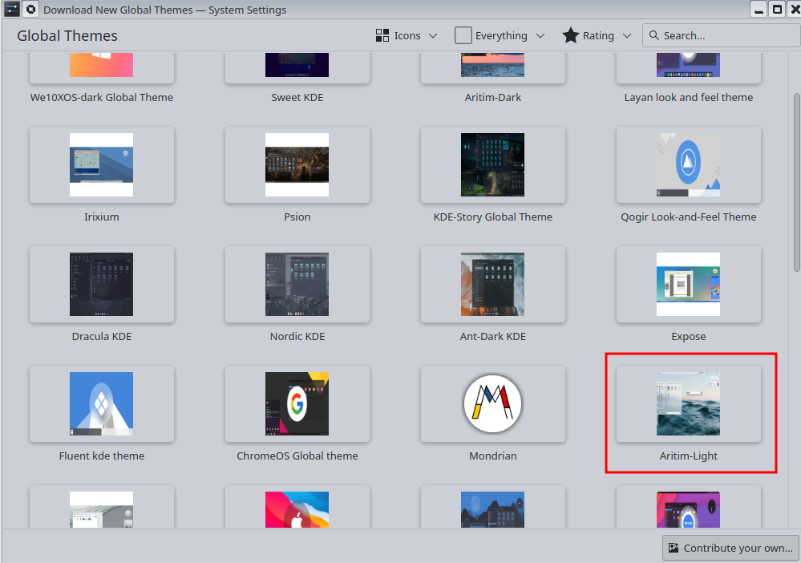
-
点击主题进入详情界面
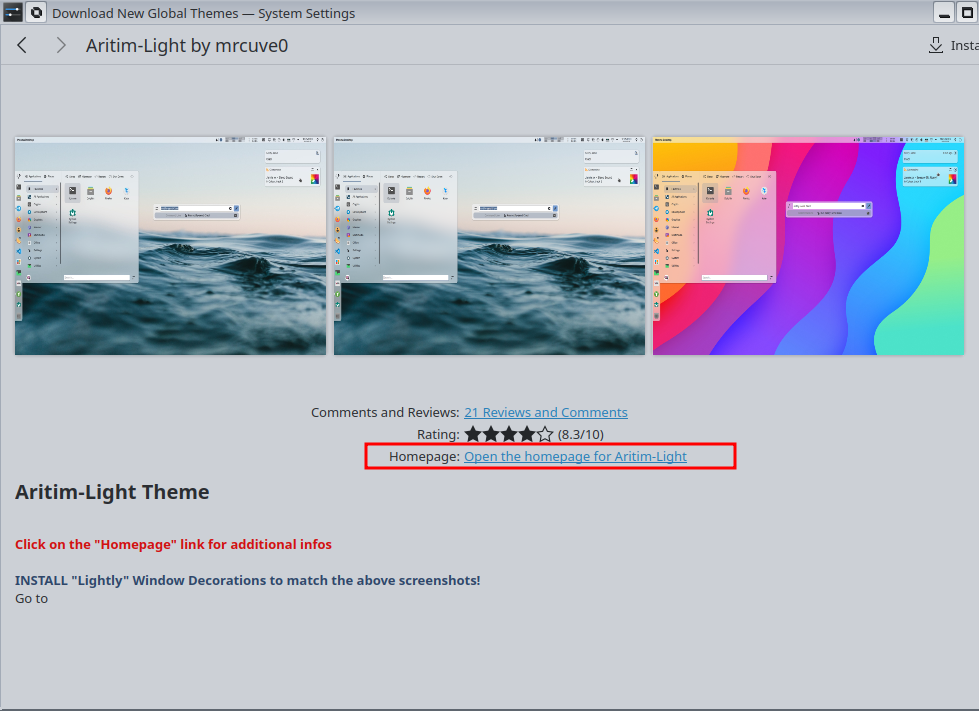
-
点击2中的红框部分的链接，通过网页打开该主题的下载界面，然后下载
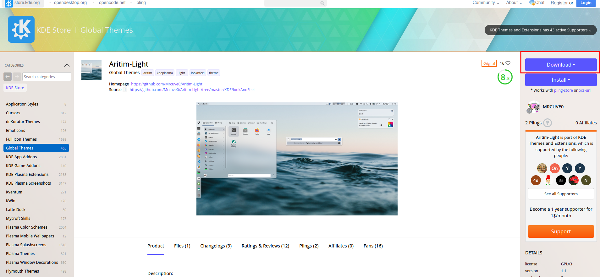
注意：不要点到
install，install是通过ocs-url下载安装的。 -
下载到本地后，在下载文件夹中打开终端，运行安装命令
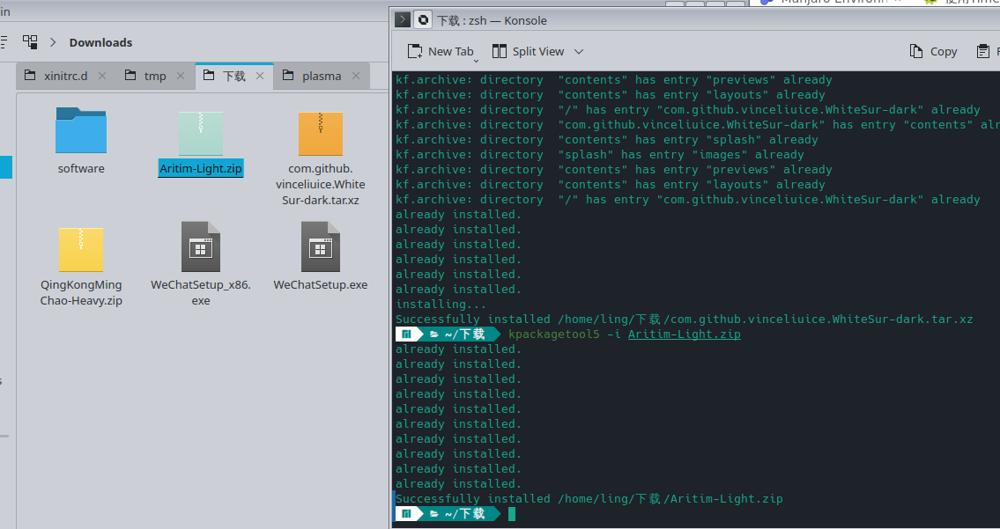
这个主题本身没有桌面布局，所以一次就安装成功了。像其他有桌面布局的主题，安装包大概都在1M多，没有布局的通常只有几百k。有布局的安装一次通常不会成功，需要在科学上网的情况下，多安装几次，如下：
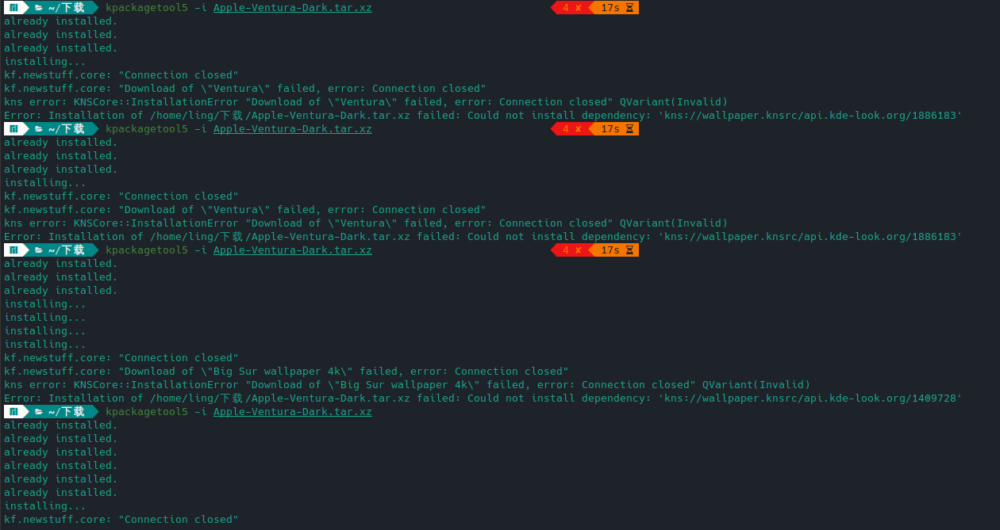
可以看到，在多安装几次以后，已经成功下载了一些之前没有下载成功的包，并进行了安装。如果多次不成功，则检查科学上网是否有问题。一般的情况需要尝试10次以内，依赖多的主题就需要尝试很多次了，例如下面图片中的主题安装
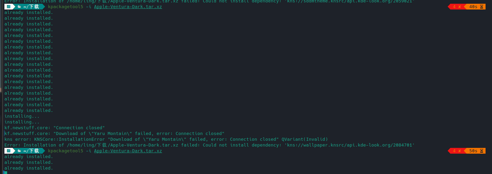
最终尝试了大概20多次，安装成功
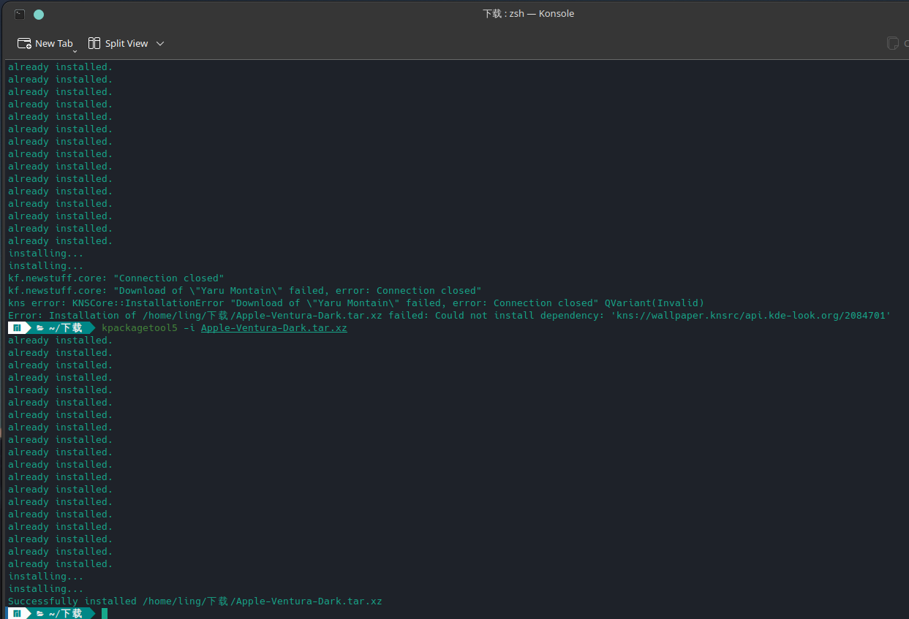
最终美化效果
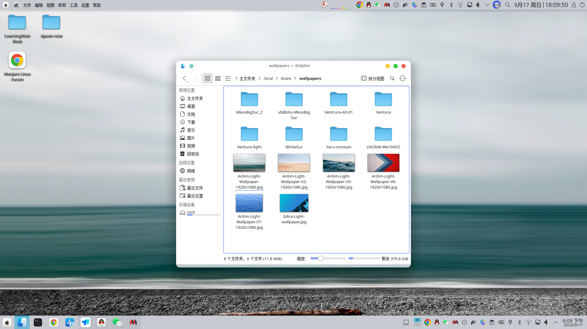
独立显卡笔记本切换GPU，以支持外接显示器
参考链接：Manjaro(kde) 安装nvidia显卡驱动（optimus-manager管理）
安装nivida驱动
首先进入设置界面，选中硬件设定，默认安装的很可能是第一个，这里先右键卸载当前驱动，然后安装有版本号的最新驱动。安装成功需要重启生效。
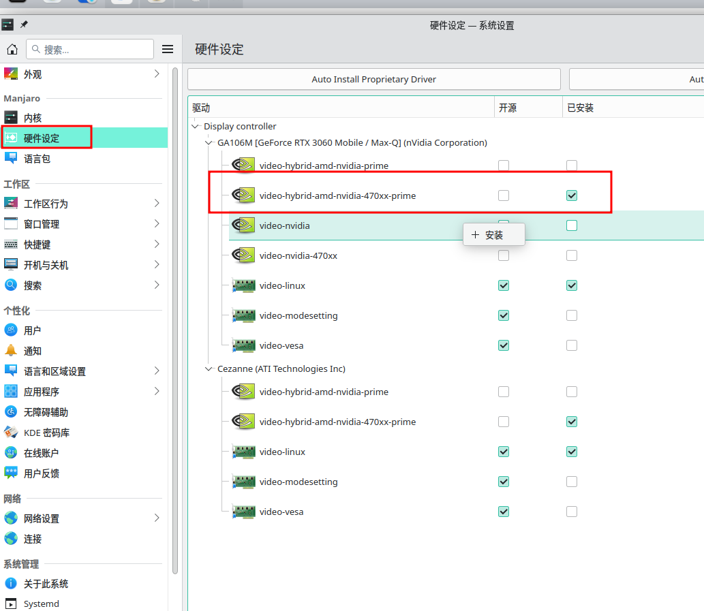
在安装Manjaro时，会自动安装驱动，但经过实践，自动安装的驱动不能正常使用（表现为：外界显示屏仅显示manjaro的开机界面，而不显示桌面内容）。
因此需要在设置中安装新的驱动。 此问题被修正，见2023.9.19日修正
开机扩展屏不进入桌面问题
2023.9.26日修正：
在后续的使用过程中，电脑启动时总是会出现Failed to start Virtual Console Setup.问题，这个问题会导致tty1启动失败，外接电脑会一直显示启动界面，而不进入桌面应该是这个问题导致的。这个问题是由于/etc/vconsole.conf 配置文件中对键盘的KEYMAP设置错误导致的，默认的KEYMAP为us，但现在变成了cn。在之前配置输入法的时候，修改键盘布局为汉语，由于是在设置的GUI界面更改的，不清楚修改了哪些地方，现在看来也对/etc/vconsole.conf进行了修改。
通过下列命令打开配置文件
|
|
修改其KEYMAP，原来为cn,修改为us。可能会有FONT等字段，直接删除就可（注意在文件的最后留一个空行），因为有默认值，直接删除不会影响配置。修改完成后如下：
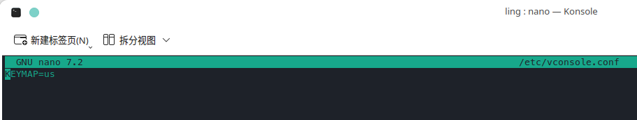
2023.9.19日修正：该问题的原因（原因之一）是由于在Optimus中的PCI功耗控制没有正确设置导致的。经过反复的尝试，当开启PCI功耗控制时，开机启动可以正常扩展第二屏幕（我的独显是直连到输出接口）。否则第二屏幕将会一直显示启动界面tty1，并且该桌面是一个虚拟桌面，快捷键ctrl+alt+F1可以切换当前桌面到tty1（默认桌面为tty2，可以通过快捷键ctrl+alt+F2切换到tty2）。而且，由于Optimus Qt的设置逻辑有一定问题，如果PCI控制选中，即使按钮变灰，PCI功耗控制仍然有效，如下图：
其他的switch选项有一些是可以改变PCI功耗控制的，因此，如果你的PCI功耗控制没有选中，并出现了上述问题，则可以先切换到其他选项，勾选PCI power contol，然后再切换到相应的模式。我的电脑在任何模式下都工作，但官方文档中提到，有一些显卡并不能都正常工作，需要自己进行尝试。
注意：不要勾选 PCI reset **，会导致机器经常卡死屏幕键盘大小写等完全没反应，或者重启！**
修改文件sddm.conf
|
|
找到x11,把这两项注释掉
|
|
安装optimus-manager管理软件
|
|
安装完成后，开启对应的服务，并设置为开机自启
|
|
重启后，进行显卡模式切换，一般切换为Hybird，意为混合模式，在连接显示屏时启动独显（图中没有开启PCI power control，这导致了我在上面提到的开机扩展屏不进入桌面的问题）
2023.9.29更正：使用ACPI call会导致概率性卡死，可能是底层不支持某一些指令，因为厂商不会实现所有的API。改为开源驱动Nouveau，测试下来，使用Nouveau比较稳定，没有出现突然卡死的情况。
其中swiching mode不用更改。若需更改，请参考官方文档：optimus-manager 中的电源管理选项指南
双屏分辨率缩放问题
对与该问题，目前在kde中没有完美的解决方案，唯一的一种方式是通过将要缩小的显示器虚拟一个较高的分辨率，并渲染较高分辨率的画面，然后根据比例缩小到物理分辨率。
参考链接：KDE 双高分辨率显示器不同 DPI 缩放比例。
这种方式我只对其在X11下的工具进行了使用，并没有完全按照其计算方式进行设置，但很遗憾，在我的电脑并不能正常工作。无论是修改~/.config/kdeglobals文件还是通过xrandr进行配置，都无法正常工作。
一行安装
|
|
最后附上一位博主2022的安装笔记
只使用了其中的windows字体安装，这部分，如果早点看到，那么微信字体的bug就不会费那么大劲了。另，其中提到到的SSD优化，目前的版本已经默认开启。
下面是该网页的保存文件，只在Chrome上测试过，可以打开。manjaro踩坑记2022更新版_swolf的博客.mhtml。mhtml格式是单个文件。
网易云音乐卡bug安装
|
|
deepin的wine有原装的gdiplus库，但只安装deepin的wechat，没有给wine程序，因此无法通过命令行安装网易云音乐。因此需要安装wine-for-wechat，提供wine命令。这一步其实没有安装新的wine。然后就可以直接安装网易云的包，就可以正常运行网易云！甚至能使用桌面歌词！